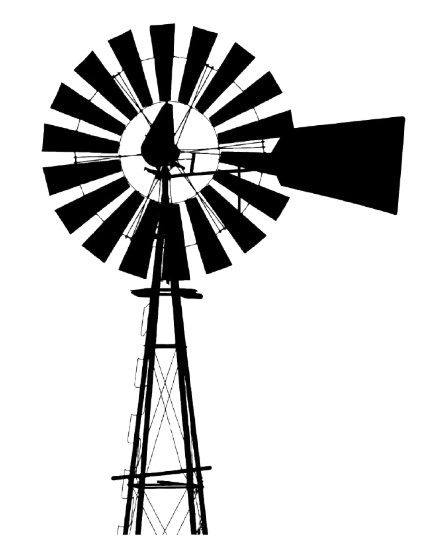
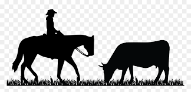
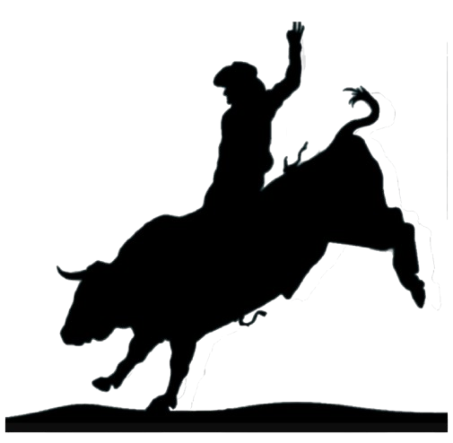

In God We Trust




In God We Trust
The Willow Springs Alliance is led by dedicated community advocates committed to growth, unity, and integrity. Learn more about the individuals guiding our mission and vision.
BIO: As founding President of the Willow Springs Alliance, [Name] has led numerous community improvement initiatives, strengthened neighborhood partnerships, and continues to serve as a bridge between residents, businesses and city leadership.
Short BIO: A long-time resident and advocate for Eastside neighborhoods, Jesse brings a wealth of experience in outreach, professionalism advocate focused on beautification and economic development. Their leadership helps ensure that all voices in the community are represented and valued.